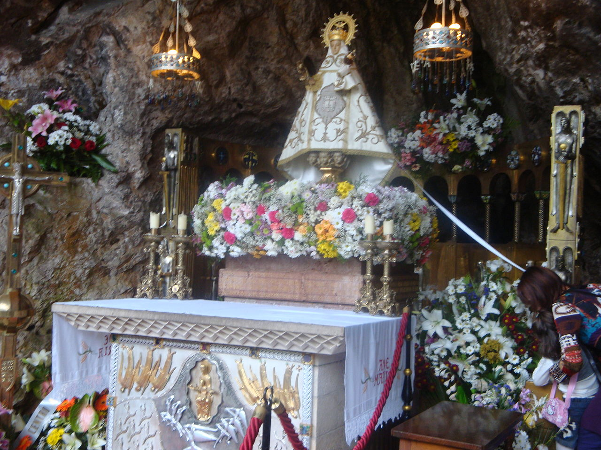

Covadonga
Índice
- Introducción
- Etimología
- Conjunto Monumental del Santuario
- Santa Cueva de Covadonga
- Monasterio de San Pedro
- Basílica de Santa María la Real de Covadonga
- Explanada
- Reyes enterrados en Covadonga
- Entorno natural
Introducción
Covadonga (cooficialmente, en asturiano, Cuadonga) es una parroquia del concejo de Cangas de Onís
en el Principado de Asturias, España, así como la única población, con la categoría de lugar, de dicha
parroquia.
La parroquia incluye el Real Sitio de Covadonga, con su Santuario, y forma parte del Parque Nacional de
los Picos de Europa, y en sus 2,54 km² habitan un total de 58 personas.
El lugar de Covadonga está una altitud media de 257 metros sobre el nivel del mar, en la falda del monte
Auseva, y dista unos 11 kilómetros de Cangas de Onís.
Etimología
Existen dos etimologías propuestas, para el topónimo Covadonga, una que le hace derivar del céltico y otra del latín. De acuerdo al origen celta, Covadonga viene de Cova d'onnica, con el significado
de "la fuente de la cueva"; con el derivado *onnika "fuente", del céltico *onna "río", que se puede encontrar en hidrónimos como Güeña y Oña (< *onna), Isongu (< *Isonniko) "fuente del río Is",
Trioungu (< *Trionniko) "tres fuentes", Candongu (< *Kandonniko) "fuente clara", etc. En cuanto a la segunda propuesta, la de su origen en la lengua latina, significaría "Cueva de la Señora" (< Cova Dominica),
haciendo alusión al lugar consagrado a la Virgen de Covadonga; sin embargo, de acuerdo a la evolución de la lengua asturiana, la evolución de Cova Dominica, habría dado el resultado de *Covadominga.
Volver al inicio
Conjunto Monumental del Santuario
El Real Sitio de Covadonga posee el conjunto monumental más visitado de Asturias. Es un santuario dedicado a la Virgen
de Covadonga (La Santina), conmemorativo de la Batalla de Covadonga.
Volver al inicio
Reyes enterrados en Covadonga

En la Santa Cueva se hallan los sepulcros de los reyes de Asturias:
- Don Pelayo
- Alfonso I, el Católico
Volver al inicio
Entorno natural
El 22 de julio de 1918, con motivo del 12º centenario de la batalla de Covadonga,
se crea el Parque nacional de la Montaña de Covadonga, primer Parque nacional de España,
que con su ampliación al resto de los Picos de Europa en 1995 pasaría a llamarse
Parque nacional de los Picos de Europa.
En esta área se encuentra el Macizo Occidental de los Picos de Europa, el macizo más extenso,
siendo Peña Santa con 2.596 metros la mayor altitud. En este macizo se sitúan los
Lagos de Covadonga, nombre que se le da al conjunto del lago Enol y el lago Ercina.
Volver al inicio
Página realizada por: Carolina González Perancho para el módulo Lenguajes de Marcas